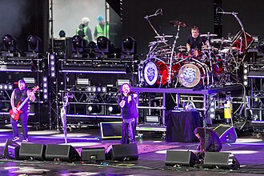

Korn(estilizado como KoЯn) es una banda estadounidense
de nu metal de Bakersfield (California), formada
originalmente en 1993 por James «Munky» Shaffer, Reginald
«Fieldy» Arvizu y David Silveria, quienes eran miembros
de la banda L.A.P.D. Su formación actual incluye a Shaffer
(guitarra); Roberto Díaz (bajo) quien reemplaza a Fieldy
desde 2021 ; Brian «Head» Welch (guitarra); Jonathan
Davis (voz) y Ray Luzier (batería), quien reemplazó a
Silveria en 2007. La banda es conocida por ser pionera
en el género nu metal y por llevarlo al mainstream.
Korn grabó una cinta de demostración, Neidermayer's Mind,
en 1993, que se distribuyó gratuitamente a las compañías
discográficas y, a pedido, al público. Su álbum debut,
Korn, fue lanzado en 1994, seguido por su éxito comercial,
Life is Peachy, en 1996. La banda experimentó su primer
gran éxito comercial con Follow the Leader (1998) e Issues
(1999), ambos debutaron en el número uno del Billboard
200. El éxito comercial de la banda continuó con Untouchables
(2002); Take a Look in the Mirror (2003); y See You on the
Other Side (2005).
Un álbum recopilatorio, Greatest Hits Vol. 1,
fue lanzado en 2004, abarcando una década de sencillos
y concluyendo el contrato de grabación de la banda con
Immortal Records y Epic Records. Firmaron con Virgin
Records y lanzaron See You on the Other Side en 2005,
y un álbum sin título en 2007. Otros álbumes recientes
de la banda, Korn III: Remember Who You Are (2010) y The
Path of Totality (2011), se lanzaron a través de Roadrunner
Records, y The Paradigm Shift (2013) se lanzó a través de
Prospect Park y Caroline Records. The Serenity of
Suffering (2016) vio su regreso a Roadrunner Records,
a través de la cual se lanzó The Nothing el 13 de
septiembre de 2019. Su último álbum, Requiem, se lanzó
a través de Loma Vista Recordings el 4 de febrero de
2022.
En 2021, Korn había vendido más de 40 millones de discos
en todo el mundo. Varios de sus lanzamientos han sido
certificados como oro, platino o multiplatino por la
Recording Industry Association of America (RIAA). Catorce
de los lanzamientos oficiales de la banda han llegado a
estar entre los diez primeros del Billboard 200, ocho de
los cuales han llegado a estar entre los cinco primeros.
Korn ha ganado dos premios Grammy de ocho nominaciones y
dos premios MTV Video Music Awards de once nominaciones.
Varios de sus vídeos musicales recibieron una importante
difusión en el programa Total Request Live de MTV, y
estuvieron entre los primeros en ser retirados del programa,
entre ellos «Got the Life» y «Freak on a Leash».
